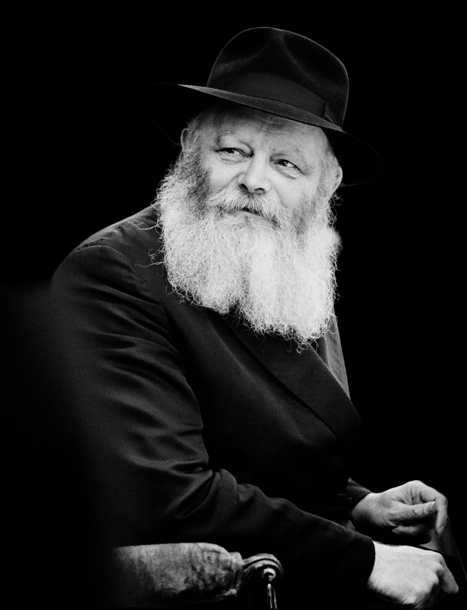

Rabbi Menachem Mendel Schneerson, the seventh leader of the Chabad-Lubavitch movement, was born in 1902
in Nikolayev,
Ukraine.
He grew up in a deeply religious family and received a comprehensive Jewish education, studying under
renowned
scholars.
His prodigious intellect and spiritual sensitivity were evident from an early age, laying the foundation
for
his future leadership.
In 1951, following the passing of his father-in-law, Rabbi Yosef Yitzchak Schneersohn, Rabbi Menachem
Mendel Schneerson
assumed the mantle of leadership of the Chabad-Lubavitch movement.
He transformed it into a global phenomenon,
revitalizing Jewish observance and education worldwide.
He emphasized the importance of spreading the teachings of
Chabad through outreach, establishing thousands of Chabad centers worldwide to provide educational, social, and
spiritual support to Jews of all backgrounds.
The Rebbe, as he was affectionately called, placed significant emphasis on education, establishing an
extensive network
of educational institutions. He launched initiatives such as the "Mitzvah Campaigns," which encouraged Jews to
perform
acts of kindness and observe Jewish rituals.
He also emphasized the study of Torah, offering innovative insights and
guidance through his voluminous letters and public addresses, which continue to inspire millions around the world.